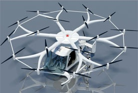
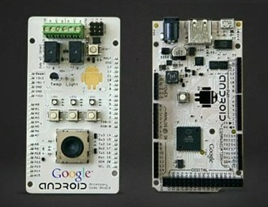
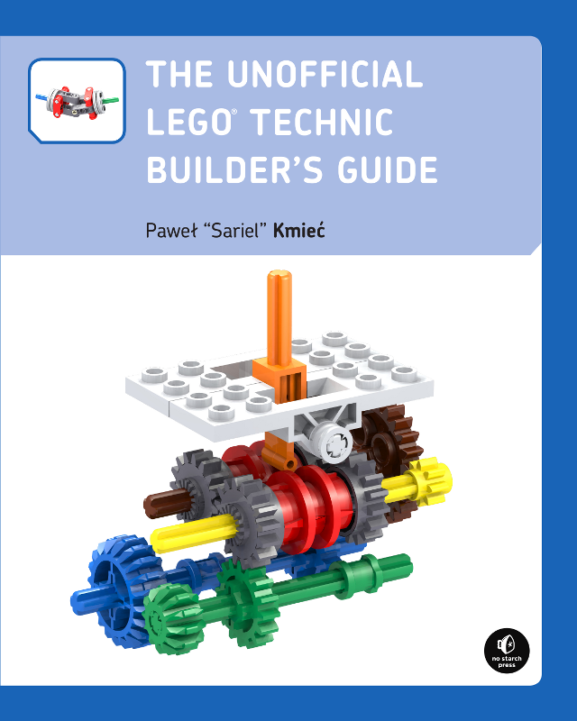

ADK and Arduino
Using the ADK (Accessory Development Kit) and Arduino to do awesome things
aka: androdino
Who is this?
Cause I had to
- Web Developer since Miss December 1994
- Barely got an Electrical Engineering degree
- Google I/O is sorta my thing

What is Arduino?
Arduino is an open-source electronics prototyping platform based on flexible, easy-to-use hardware and software. It's intended for artists, designers, hobbyists, and anyone interested in creating interactive objects or environments.
What is ADK?
The Accessory Development Kit (ADK) is a reference implementation for hardware manufacturers and hobbyists to use as a starting point for building accessories for Android.
What is awesome?
What is awesome?

What is awesome?

What is awesome?
More on Arduino
Official Arduino
ATmega328, 16Mhz

Arduino MEGA
ATmega2560, 16Mhz (more pins, basically)

Arduino MEGA ADK


Arduino Due
ARM Cortex M3, 32-bit

ADK 2011
Basically, it's an Arduino MEGA ADK (ATmega2560, 16Mhz)
ADK 2012
Basically, it's an Arduino Due (ARM Cortex M3, 32-bit)
With a TON of sensors and LEDs
The Clones!
Plus dozens of others (ruggedunio and iteaduino)!

Shields n' Stuff!
Here are a few I have here
Wanna see them? (maybe after the demo, which is next)
Demo "punch it"
Hardware details
- Arduino Uno
- itead "Motomama" Shield with BTBee module
Notice
- my custom Lego PF to Arduino wires
- cool Lego seering mechanism
- TWO 9V battery compartments (one only delivers 3V)
Hardware Software Details
Hardware Software Details
Android Details
Psy
Android Details
Android Details
Challenges
- RX to TX and TX to RX??
- Can't program when the bluetooth is connected and using UART pins
- Software Serial on Mega/ADK
- SoftwareSerial library (or any other normal library) not in ADK 2012 custom IDE
- Lego batter pack is 9V. L298d chip on motor shield is inefficient
Demo
Crawler (which means slow, aparently)
Hardware details
- ADK 2011
- Official Motor Shield
- Bluetooth Shield (not necessary)
What's next?
What else?
Use that extra usb port!
Put a phone in as the windshield
Other options?
i.e. Why didn't you use?
Where the <BLEEP>
is the Javascript?
i.e. Why didn't you use?
Resources
Books!!
Honorable mention to electronics and lego stackexchanges


Want to laugh? Check out my panic post from this morning.
Where did you get all that stuff?
Vendors
AmazonMaker Shed
Sparkfun
Adafruit
itead
Lego Technic and Power Functions